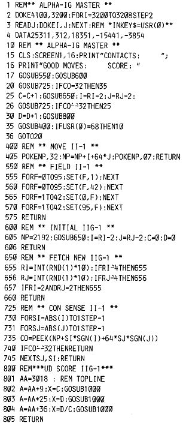

Nascom Journal |
Juni 1982 · Ausgabe 6 |
Schema, und die Erfolgspunkte bei „Score“ steigen. Wird der Ablauf durch D gestört, so bleibt das „Gedächtnis“ erhalten, und sehr rasch wird das Verhaltensmuster wieder aufgenommen. Die Erfolgsquote kann so leicht 1.0 erreichen. Interessant ist, daß jedes Beta-Wesen (d.h. nach Reset und Neustart des Programms) sich andere Muster angewöhnt.
Das Gamma-Wesen besitzt als zusätzliche Eigenschaft die Fähigkeit, auch „in die Zukunft zu blicken“, d.h. es merkt sich ebenfalls seine erfolgreichen Züge, verallgemeinert sie aber und versucht, sie auf zukünftige neue Situationen anzuwenden. Dazu wird ein gesonderter Speicher angelegt, der den Inhalt einer entsprechenden Adresse um 1 erhöht, wenn ein erfolgreicher Zug gemacht wurde. Dadurch steigt das „Erfolgserlebnis“ bis es bei der Zahl 4 dazu führt, den erfolgreichen Zug zu speichern und auf ähnliche Kontakte anzuwenden. Bei Mißerfolgen wird der „Erfolgsspeicher“ erniedrigt, und der entsprechende Zug vergessen. Die einzelnen Routinen sind im Buch sehr genau erklärt und würden den Rahmen dieses Heftes sprengen. Die Aktionen des Gamma-Wesens waren für mich aber lang nicht so überzeugend wie die Lernfähigkeit der Beta-Ausgabe. Vielleicht ist mir da beim Umsetzen des TRS 80 Programms ein Fehler unterlaufen.
Man kann die Programme aber nicht nur zum Experimentieren einsetzen (es sind sogar Feldversuche über 24 Stunden abgedruckt), sondern als recht amüsante Spiele für mehrere Mitspieler anwenden.
So kann ein Spieler beim Spiel „Irrgarten“ die Zeit stoppen, die „sein“ Wesen benötigt, um vom Ausgangspunkt das Ziel ZZ zu erreichen. (Wohl gemerkt: es ist nicht auf das Erreichen dieses Ziels programmiert und läuft auch gerne rückwärts!)
Beim Spiel „Einschließen“ (Es sind nur jeweils die entsprechenden Zeilen zu ändern oder hinzuzufügen) kann man stoppen, wie lange das Wesen, das nun eine Spur hinterläßt, braucht, um sich selbst den Weg abzuschneiden. Vielleicht finden Sie noch andere Möglichkeiten, die „Wesen“ im Spiel einzusetzen.
Die abgedruckten Programme erkennen nur Space (Weg frei) und Nicht-Space (Kontakt). Dies wird vom Author als Level I bezeichnet. Die Level II – Wesen können verschiedene Hindernisse unterscheiden. Dadurch werden ihre Bewegungen natürlich interessanter, besonders der Versuch, nach Störungen das alte Muster wieder aufzunehmen. Wenn Sie daran oder an ausführlicherer Information über das gesamte System interessiert sind, empfehle ich, das Buch anzuschaffen.
Wer hat sich schon mit ähnlichen Programmen befaßt? Vielleicht können Sie weiteren Stoff liefern zum Thema „Maschinenintelligenz“. Viele Leser würden sich sicher freuen.
| Seite 10 von 24 |
|---|